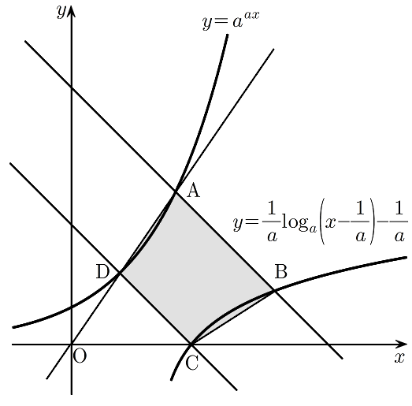

그림과 같이 상수 에 대하여 두 곡선 과 이 있다. 곡선 위의 점 중 좌표가 보다 큰 점 에 대하여 점 를 지나고 기울기가 인 직선이 곡선 과 만나는 점을 라 하자. 곡선 이 축과 만나는 점을 라 하고, 점 를 지나고 기울기가 인 직선이 곡선 과 만나는 점을 라 하자. 점 의 좌표와 점 의 좌표의 차가 이고 직선 가 원점을 지날 때, 사각형 의 넓이는? [4점]

① ② ③ ④ ⑤
로그값이 1이면 진수가 밑과 같아. 로그를 없앨 때는 밑이 1이 아닌 양수인지, 진수가 양수인지 같이 확인해 두자.
판단이 교점은 식을 정리해서는 안 나와. 가 가 되는 을 넣어 보고, 가 가 커질수록 커지니까 같은 값을 두 번 가질 수 없다는 걸로 확정하는 거야.
이라 에 를 곱해도 대소가 그대로이고, 밑 (㉠)이라 지수가 커지면 값도 커져.
주의차가 이라는 말은 어느 쪽이 큰지 정해 주지 않아. 두 경우를 다 쓰고 ㉡으로 거르는 거야.
판단직선 AD가 원점을 지나면 O, A, D가 한 직선 위에 있어. 그러니까 O에서 A로 가는 기울기와 O에서 D로 가는 기울기가 같아야 해.
를 구하면서 조건을 식으로 바꿨으니, 구한 A, D가 ㉡㉢㉣을 실제로 만족시키는지 다시 넣어 보자. 원점과 A, D가 모두 직선 위에 있어.
이제 네 점 중 남은 B만 구하면 넓이를 셀 수 있어.
A의 두 좌표를 바꾸고 씩 더하고 빼 보면 넣어 볼 후보가 나와.
은 양수라 곱해도 대소가 그대로야. 왼쪽 식이 가 커질수록 커지니까 같은 값을 두 번 가질 수 없어.
판단두 직선은 기울기가 로 같고 의 값이 달라서 평행한 서로 다른 직선이야. A에서 B로, D에서 C로 모두 가 커지는 쪽이라 사각형 ABCD는 사다리꼴로 보고 넓이를 구하면 돼.
사다리꼴의 높이는 평행한 두 직선 사이의 거리야. 점 C에서 직선 AB까지의 거리로 구하면 돼.